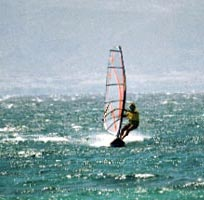

| |
|
Vacanza attiva
In caso che la sua visione della vacanza non include solo il poltrire nella frescura e fare il bagno, noi possiamo offrire qualcos'altro: per quelli dello spirito avventuristico abbiamo l` idroscivolante sportivo con motori di 75ks con cui e` possibile andare sulle isole vicine. Se gli idroscivolanti sono troppo presti e` possibile affittare le barche dei pescatori con il motore di 5KS e andare con la sua famiglia ad una delle molte baie.
Il mare del nostro canale e` limpido e ideale per nuotare. Il fondo del canale non passa 15 metri. Lungo la costa, il fondo non passa circa 5-6 metri, che e` ideale per gli amatori e gli entusiasti. Se comprate una di queste macchine fotografiche, avrete molte cose a dimostrare agli amici.
Per veramente sentire il mare, la nostra raccomandazione e` windsurfing. Noi affittiamo le tavole a vela per i principianti ma anche le tavole professionali. C`e` anche la possibilita` di organizzare la scuola per windsurfing o fare l'istruzione individuale. Abbiamo 5 tavole di vela per i bambini, 4 per i progressivi e 6 per i principianti.
Tranne la ricreazione al mare, c`e` anche quella in terra. Si possono affittare le MTB biciclette o le motoleggere di 50ccm, i famosi motoscooter. Con i motoscooter si puo` fare il giro per tutta la costa (6-7 chilometri) o andare a luoghi vicini. Sulla collina sopra Turanj, ci sono alcuni sentieri che sono ideali per il giro nelle MTB biciclette.
Naturalmente, l'offerta della ricreazione e dello sport non finisce qui. Turanj possiede alcuni campi sportivi (gran campo di calcio, piccolo capo di gioco e` la piscina per la pallanuoto). Vicino a Turanj si trova il canyon del fiume Zrmanja, dove si puo` fare il rafting. Anche, il parco naturale, il lago di Vrana e Telašćica, i parchi nazionali, le cascate di Krka, Kornati e Paklenica si trovano solo pochi chilometri da Turanj. |